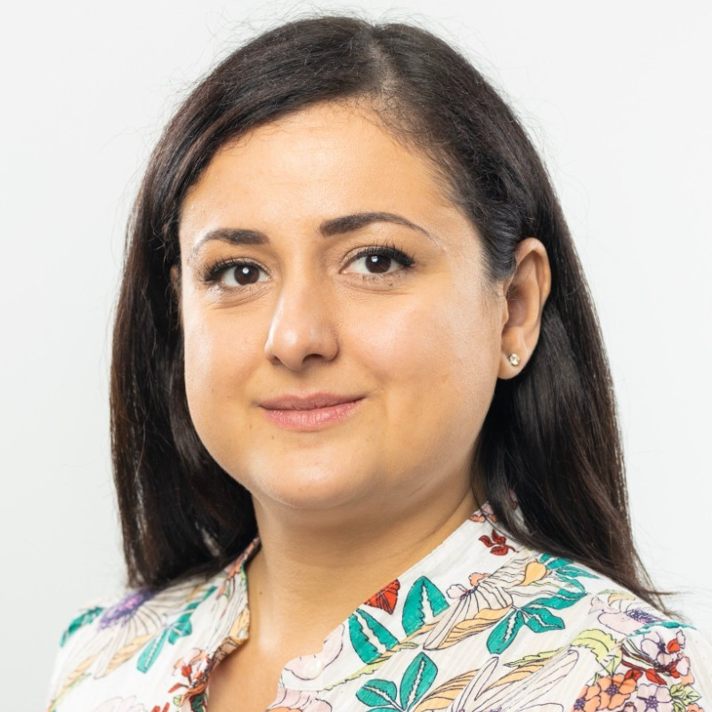
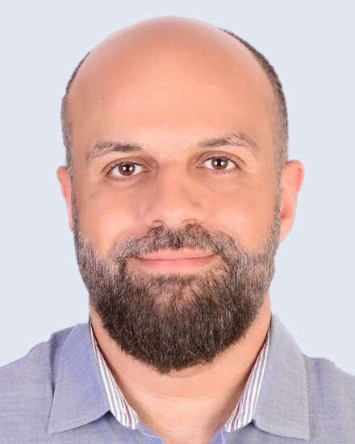

The blog is edited by Hazar Harmouch and Essam Mansour. The editors commission posts, work with authors through drafts, and aim to keep a wide range of voices, topics, and regions represented.
Writing for the blog. We welcome proposals from across the community. Send a short pitch, two or three sentences on the idea and why it matters now. Posts usually run between 1,000 and 3,000 words, with 2,000 words as a good target.
Assistant Professor, University of Amsterdam

Hazar Harmouch is an Assistant Professor at the Informatics Institute of the University of Amsterdam and a member of the Intelligent Data Engineering (INDE) Lab. Her research focuses on assessing and improving data quality for trustworthy artificial intelligence. She investigates how data quality influences the performance, robustness, and fairness of machine learning systems, as well as the practical challenges of aligning data quality assessment with regulatory requirements. Previously, she was a postdoctoral researcher at the Hasso Plattner Institute, University of Potsdam, where she completed her PhD focusing on single-column data profiling. She serves regularly on the program committees of SIGMOD, VLDB, and ICDE, was Tutorial Chair of ICDE 2025, and co-organizes the QDB workshop at VLDB.
As an editor, she is drawn to posts that make careful empirical work readable, and to perspectives from researchers who are early in their careers. For more information, please visit: https://hazourahh.github.io
Associate Professor, Concordia University

Essam Mansour is a tenured Associate Professor in the Department of Computer Science and Software Engineering at Concordia University in Montreal, where he heads the Concordia Data Systems (CoDS) Lab. His research sits at the meeting point of data systems, knowledge graphs, and AI agents. His group builds systems that let agents operate over organizational data in a governed and verifiable way. Recent work spans agent memory, LLM-assisted query rewriting, conversational question answering over knowledge graphs, and graph foundation models. These systems are released as open source, and the lab works with industry partners on problems drawn from practice. This work appears at venues including SIGMOD, VLDB, and ICDE. He is General Chair of IEEE ICDE 2026 and Demonstration Chair of VLDB 2027.
As an editor, he is interested in posts that connect database research to the systems now being built around large language models, and in widening the set of groups the community hears from. For more information, please visit: https://emansour.com
{% endraw %}